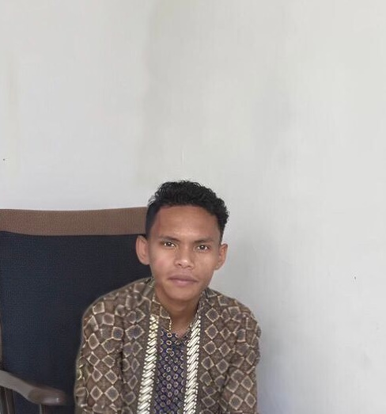

Membangun ekosistem digital yang aman, transparan, dan berpusat pada integritas moral.

Sebagai mahasiswa semester 4 yang aktif di bidang Full-Stack Web Development dan IT Support, saya memandang teknologi bukan hanya sebagai alat fungsional, tetapi sebagai medium untuk mempraktikkan etika profesi.
Saya berdedikasi untuk menciptakan solusi IT yang tidak hanya efisien secara teknis, tetapi juga menghormati privasi data dan memberikan transparansi penuh kepada pengguna akhir.
Sebagai pengembang, prinsip moral saya berakar pada Authenticity (Keaslian) dan Trust (Kepercayaan). Saya percaya bahwa baris kode yang jujur adalah fondasi dari sistem yang aman dan dapat diandalkan. Kejujuran dalam menulis kode bukan hanya soal teknis, tetapi juga bentuk tanggung jawab moral kepada pengguna yang mempercayakan data dan aktivitas mereka pada sistem yang saya bangun.
Dalam setiap proyek, saya menerapkan Empathy (Empati) untuk merancang sistem yang inklusif, intuitif, dan mudah dipahami oleh semua lapisan masyarakat, bukan hanya kalangan teknis. Saya selalu menempatkan diri pada posisi pengguna akhir sebelum membuat keputusan desain maupun arsitektur sistem.
Humility (Kerendahan Hati) menuntun saya untuk tetap terbuka terhadap kritik teknis, belajar dari kesalahan, dan tidak merasa paling benar dalam tim. Sementara itu, Respect (Rasa Hormat) menjadi panduan saya dalam menjaga kerahasiaan data klien serta menghargai kontribusi setiap anggota tim tanpa memandang latar belakang.
Bagi saya, kesuksesan seorang profesional IT diukur bukan dari seberapa canggih teknologi yang digunakan, melainkan dari seberapa besar dampak positif dan rasa aman yang diberikan kepada masyarakat melalui teknologi yang transparan dan bertanggung jawab.
Membangun platform pemungutan suara digital yang terintegrasi untuk pemilihan ketua BEM kampus guna menggantikan sistem manual.
Aplikasi pencatatan aset digital dan perangkat keras untuk memantau inventaris kantor secara real-time dan akurat.
Pengembangan sistem pencatatan kehadiran mahasiswa di Politeknik eLBajo Commodus secara digital untuk mempermudah manajemen data dan meminimalisir kesalahan input manual.
Penerapan Etika & Tantangan: Tantangan utama adalah memastikan integritas data agar tidak terjadi manipulasi absensi. Saya menerapkan manajemen sesi yang ketat untuk memastikan akuntabilitas (Prinsip Trust).